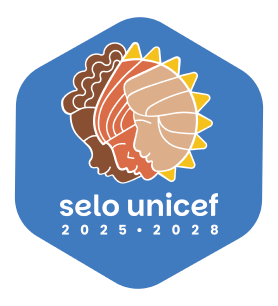
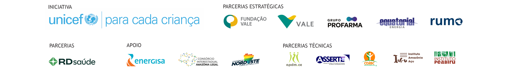

Selecione um município
SELO UNICEF 2025-2028PASSAPORTE DA
PARTICIPAÇÃO
CIDADÃ

Município comprometido com a jornada de participação cidadã de adolescentes

Selo UNICEF 2025-2028
Digite o município participante e gere automaticamente o Passaporte com os selos conquistados
Pré-visualização

Município comprometido com a jornada de participação cidadã de adolescentes

Município selecionado.